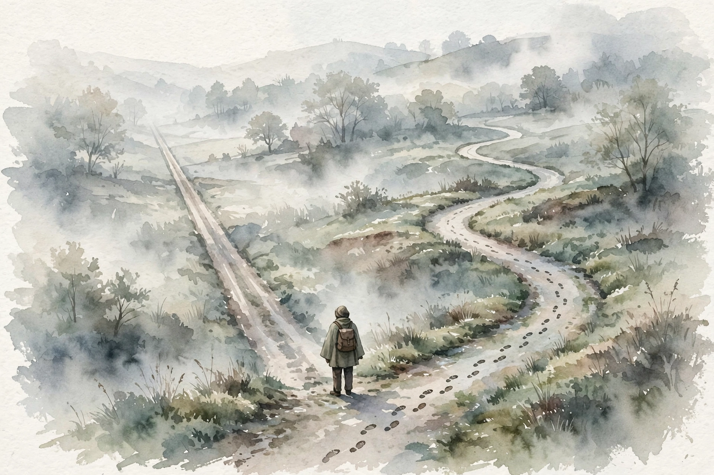

The Knowledge Project · Episode 9 · Companion
Daniel Kahneman
Daniel Kahneman on judgment, noise, and the biases even he cannot escape. This companion follows the full episode and pulls out the ideas on intuition, the army interview, the premortem, and why two experts disagree by fifty percent.

Illustration. Two systems. Fast intuition takes the straight road. Slow judgment takes the winding one. AI-generated watercolor made for this page.
Watch. The official episode video. Use the chapter menu above to jump to any section of this companion as you listen.
The Wisdom Index: every nugget in this companion
Part 1
Put Aside Your Intuition
Kahneman opens with a rule. Do not form an intuitive solution first. Score the individual points, build the full profile, and only then let intuition speak. Intuition first means evidence never gets a fair hearing.
He defines judgment as measurement with the mind as the instrument. Because the instrument is informal, two honest judges disagree. The discipline is to delay the overall verdict until the parts are scored.
Nugget 1 · Judgment
Score the parts before the whole
What happened. Kahneman prescribes rating each factor independently, then letting intuition react to the complete profile.
Why it matters. An early impression spends the rest of the meeting confirming itself. Late intuition has fresh evidence to work with.
The principle. Break the decision into scored parts. Decide last, not first.
Part 2
Happiness Versus Satisfaction
Kahneman splits well-being in two. Happiness is the emotional tone of the day, mostly social: time with people you love. Life satisfaction is the story you tell about your life, where money, education, and prestige count.
His study with Angus Deaton found the split in the data. Past about seventy thousand dollars, more money does not make days feel better, though it keeps raising the story score. Poverty, meanwhile, reliably makes days worse.
Past $70,000, the day stops improving
Hover any bar for detail. A visual model of the Deaton finding.
Source: episode transcript. The Deaton study found daily happiness flattens past about $70,000 while life satisfaction keeps rising.
Part 3
The Army Interview
At twenty-two, Kahneman redesigned the Israeli army interview. He picked six traits, wrote questions for each, and ordered interviewers to score each trait independently before any overall judgment. Then came the famous instruction:
close your eyes
Daniel Kahneman on the final intuitive judgment, in the episode
After the disciplined scoring, the interviewer could close their eyes and put a number on the candidate. The method stayed in use for over fifty years. Structure first, intuition last.
Nugget 2 · Hiring
Structure the interview, then trust the gut
What happened. Kahneman forced independent trait scores before any overall impression, then allowed one final intuitive number.
Why it matters. Unstructured interviews let the first thirty seconds decide. Structure gives intuition clean material.
The principle. Score the parts in isolation. Let the gut speak only after the evidence is on the table.
Part 4
Biases and the Julie Test
Kahneman spent his life studying cognitive biases and admits he is not much better at avoiding them than anyone else. Education helps on average, he says, but no one should expect immunity.
His favorite demonstration is Julie. You learn she read fluently at age four. A number pops into your head for her college GPA, near the ninetieth percentile, matching your impression of her ability. That prediction is statistically empty. Reading age barely predicts GPA. The sound forecast starts at the base rate, about 3.1 or 3.2, and moves only slightly upward.
The Julie test: impression versus statistics
Hover any bar for detail.
Source: episode transcript. The intuitive GPA matches the 90th-percentile impression. The sound forecast starts at 3.1 or 3.2.
He adds two more tools. In negotiation, the first number anchors everyone, so he teaches students to reject absurd openers outright. And Kurt Lewin's lesson on change: do not push harder on driving forces, remove the restraining forces instead.
Part 5
The Premortem
For groups near a decision, Kahneman loves Gary Klein's premortem. Imagine it is two years later and the decision was a disaster. Now write the story of the disaster in bullet points.
The exercise legitimizes doubt at the exact moment doubt becomes socially costly. People who slow a group near a decision look annoying. The premortem makes them heroes instead.
Nugget 3 · Decisions
Hold the funeral before the wedding
What happened. Before a big decision, the group imagines it failed and writes down how.
Why it matters. Near a decision, agreement feels like progress and doubt feels like sabotage. The premortem flips the social cost.
The principle. Schedule the disaster story before you commit. It is cheaper to imagine than to live.
Part 6
Noise
Kahneman's late-career obsession is noise: unwanted variability in judgment. At an insurance company, fifty underwriters priced the same cases. Leaders expected two random underwriters to differ by ten percent. The real figure was about fifty percent.
where there is judgment, there is noise, and there is more of it than you think
Daniel Kahneman on noise, in the episode
Expected noise versus real noise
Hover any bar for detail.
Source: episode transcript. Leaders expected 10 percent. The audit of 50 underwriters found about 50 percent.
He closes with unusual honesty. The psychology replication crisis overturned work he once believed, including priming studies he described as fact. The famous wrinkles-and-walking-speed effect did not replicate. He calls himself gullible for trusting published evidence, and now treats sensational findings with far more caution.
Takeaways
- Score the parts before the whole. Let intuition speak last.
- Separate daily happiness from life satisfaction. Money buys the second, not the first.
- Run a premortem before every big decision. Write the disaster story early.
- Where there is judgment, there is noise. Audit for it instead of assuming it away.